En esta entrega nos vamos a centrar en restaurar una imagen de nuestro repositorio sobre varios equipos nuevos.
El objetivo es restaurar la imagen de la anterior práctica sobre dos máquinas al mismo tiempo VMR1 y VMR2. Recuerda que ha de tener mayor capacidad que el disco de la VM sobre la que se hizo la imagen.
✨✨Recuerda revisar la rúbrica para saber cómo se va a evaluar.✨✨
👌Recuerda marcar la tarea como entregada cuando hayas subido el vídeo (siempre antes de la hora límite).👌
😡Pasada la fecha de entrega se considerará "Tarea no entregada"😡
En esta prácitca como se encuentra citado arriba vamos a restaurar la imagen de la anterior práctica sobre dos máquinas al mismo tiempo VMR1 y VMR2.
En primer lugar he creado la máquina VMS1 que actua como servidor para propagar la imagen vía DHCP. En esta máquina adjuntaremos los siguientes discos:
En primer lugar iniciamos la máquina con la ISO de DRBL para entrar a GPARTED y crear tanto la tabla de particiones (GPT) como el sistema de archivos (NTFS) de los discos de VMR1 y VMR2. Una vez están preparados los discos los eliminamos del servidor y dejamos simplemente esto:
Ahora iniciamos de nuevo el servidor y comenzamos a realizar las configuraciones pertinentes que se mostrarán durante esta documentación, en las máquinas clientes hay que cambiar el orden de arranque y dejar simplemente vía red.
Una vez todo restaurado con éxito podemos apagar el servidor e iniciar las máquinas con sus discos.
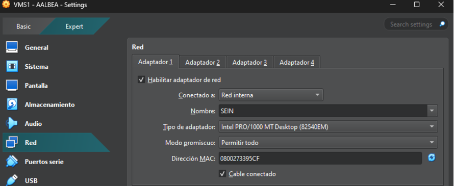


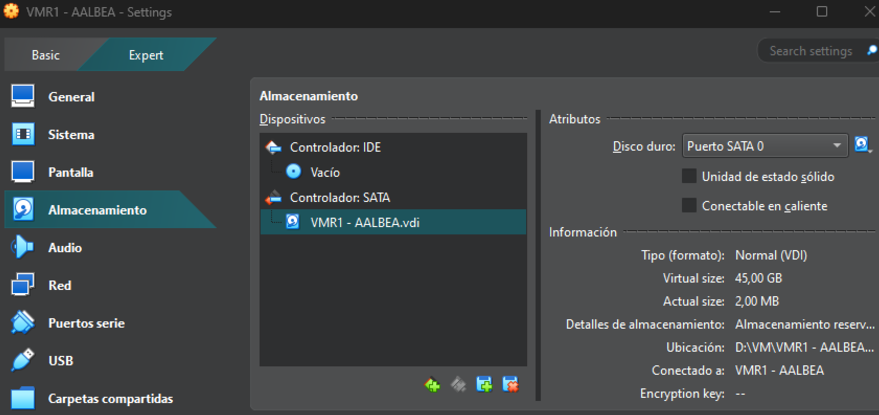
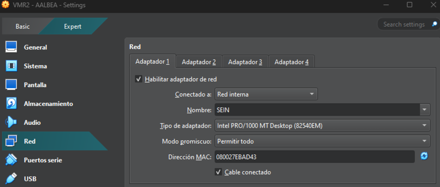
VirtualBox: 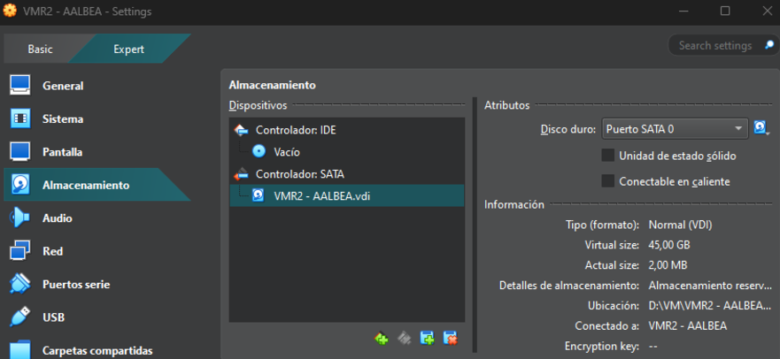
Gparted:
Iniciamos Clonezilla en el servidor (VMS1)
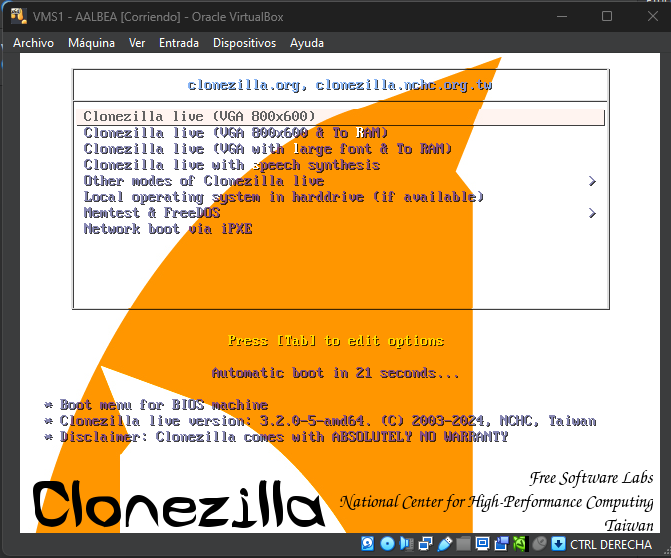
En este paso debemos elegir que tipo de servicio queremos usar, en este caso iniciaremos Clonezilla Lite Server
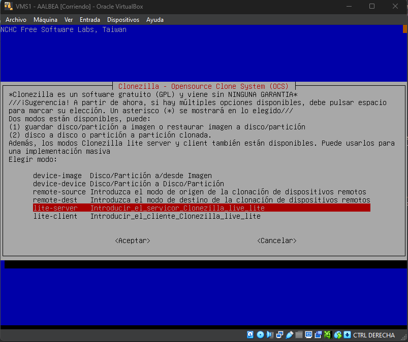
Elegimos el modo DHCP para propagar a las máquinas que se encuentren en estado PXE.

쮻칩nde se almacena el repositorio? En este caso en local ya que se encuentra adjuntado como disco a la máquina virtual.
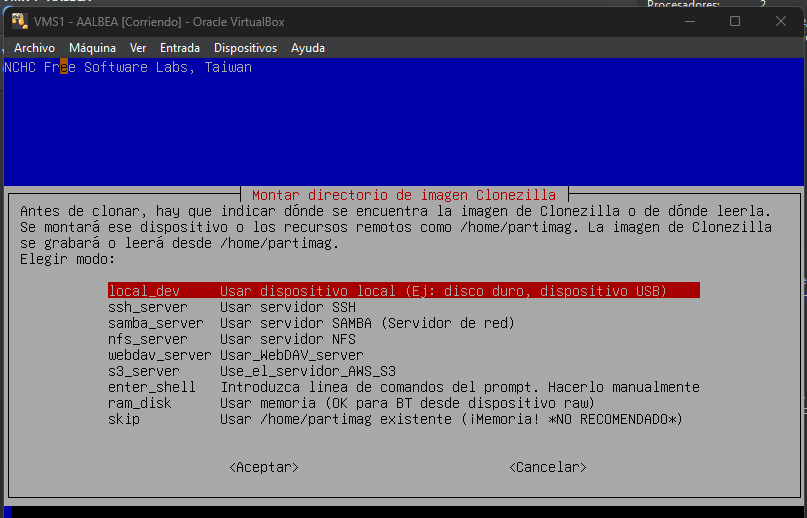
Chequeo previo de la imagen para evitar errores que no nos permitan seguir con la restauración.

Aquí marcamos la imagen a restaurar, en este caso es la única almacenada. En la parte inferior podemos ver las propiedades del repositorio

En este caso el modo de despliegue será en multicast, así que marcamos la primera opción. Cabe recalcar que multicast es un modo en el que podemos enviar paquetes a la vez a varios dispositivos seleccionados.

Restauramos la imagen al disco completo de los clientes

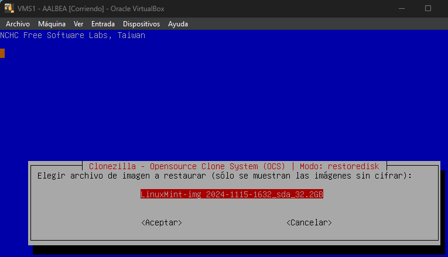
Se crean las tablas de particiones proporcionalmente ya que los discos de origen cuando se realizó la imagen del disco no tienen las mismas propiedades de almacenamiento que los de destino.
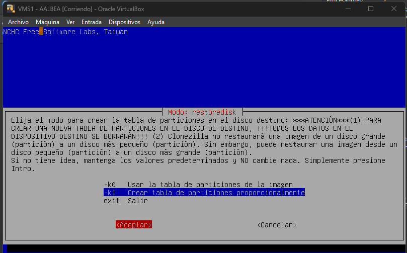
Primera opción, multicast ya explicada anteriormente.
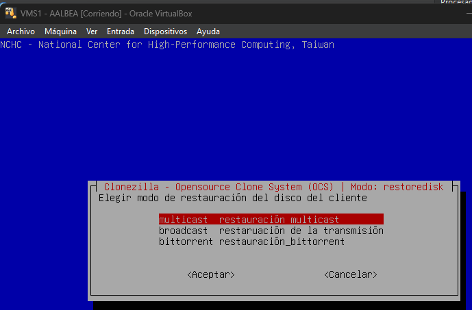
En este caso podemos usar el modo de número de clientes ya que son pocas máquinas (2) y es menos probable que falle alguna de ellas, en casos de clonación masiva es recomendable usar tiempos de espera.
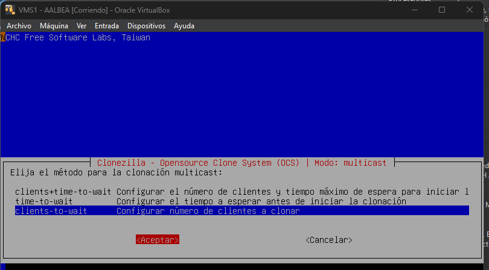
Servidor a la espera de que se complete el proceso de restauración

En este momento las máquinas clientes se encuentran en modo DHCP buscando el servidor para que les propague la restauración de imagen
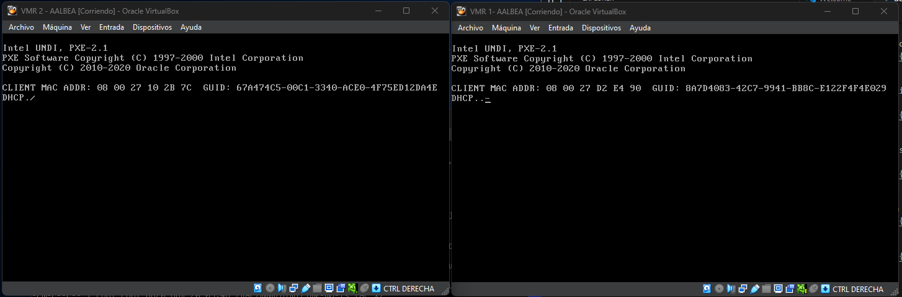
Clientes ya conectados al servidor iniciando el proceso.

Primer proceso conjunto


Segundo proceso conjunto
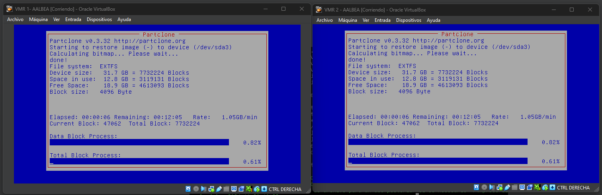
Proceso de restauración completado con éxito en las dos máquinas clientes.